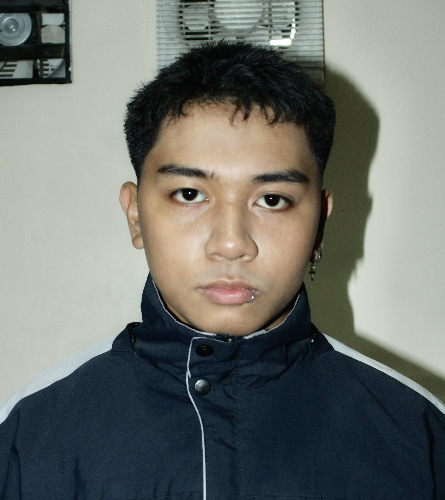

Welcome
Hello! I am Khallel, a second-year Multimedia Arts student with a passion for visual storytelling. Through photography, filmmaking, and graphic design, I bring ideas to life and capture moments that deserve a closer look. I approach each project with curiosity and attention to detail, creating work that feels thoughtful, expressive, and memorable.